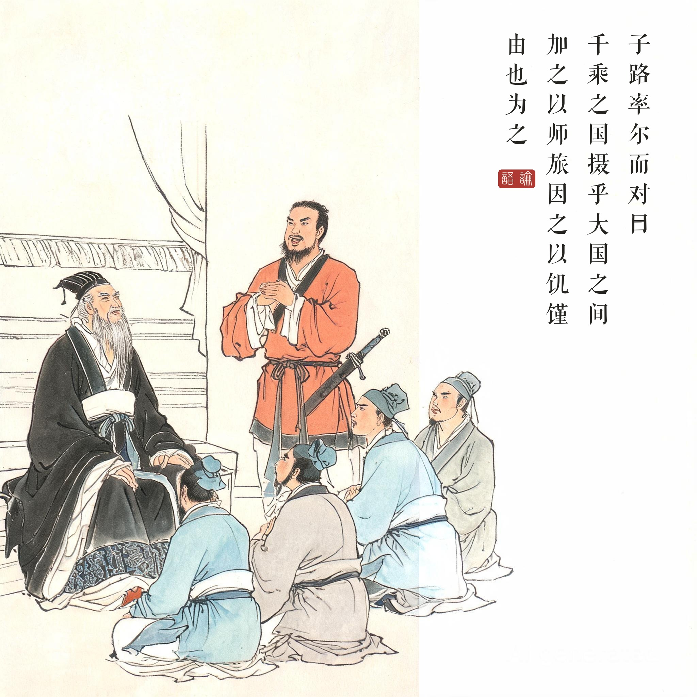
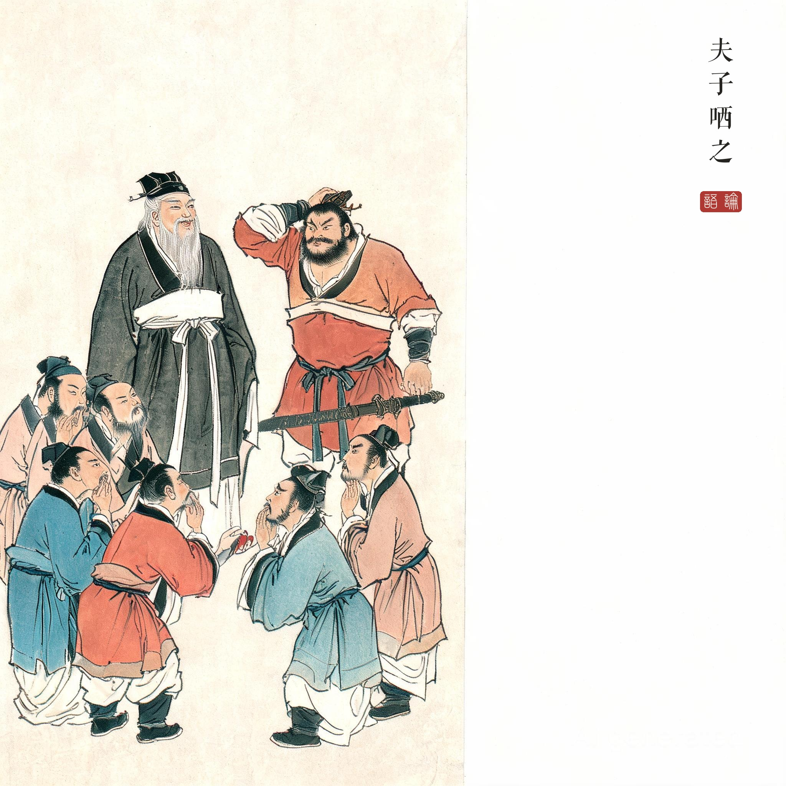
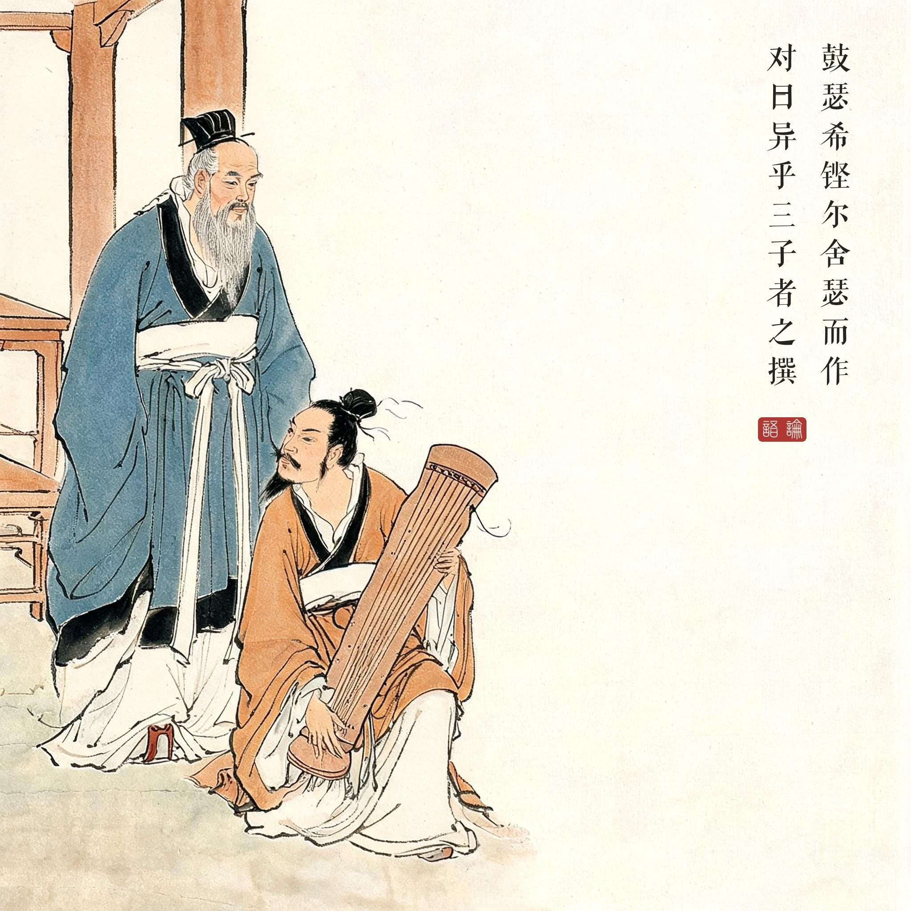
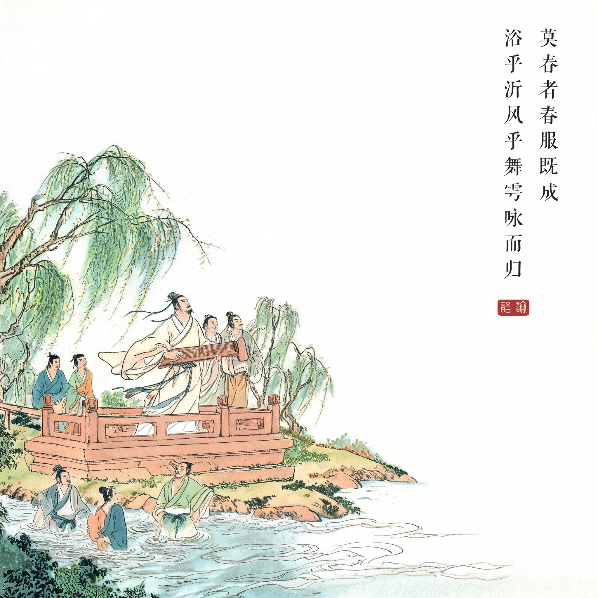
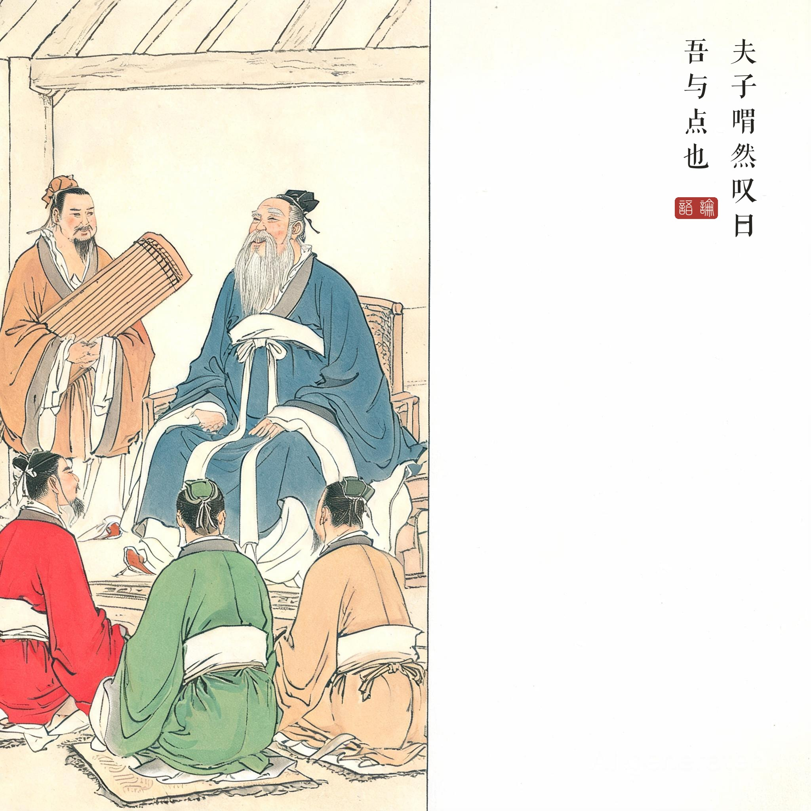

《论语 · 先进第十一》"子路曾皙冉有公西华侍坐"章，为《论语》文学性最高的一章，全章近四百字，人物声口毕现。
（据 daizhigev20《论语》底本节录，题款诸句见组画清单）
子路、曾皙、冉有、公西华陪坐。孔子说：我年长你们几天，不要因为我而拘束。平日你们说"无人知我"——若有人用你们，你们打算做什么？
子路抢先答：一个夹在大国之间、外有战祸内有饥荒的千乘之国，交给我三年，可使人人有勇，且知方略。夫子听了微微一笑。冉有求小些：方圆六七十里的小国，三年可使民足，至于礼乐教化，要等贤者。公西华更谦：不敢说能做什么，愿意在宗庙祭祀、诸侯会盟中学做一个小司仪。
问到曾点，他鼓瑟正酣，铿然一声放下瑟站起："我与三位所想不同。"夫子说：何妨，各言其志。"暮春时节，春服穿定，与五六个成年人、六七个少年，浴于沂水，在舞雩台上迎风，一路唱着歌回来。"夫子喟然叹道："我赞成曾点啊！"
曾点之志，字面不过一场春游，后世却争论了两千年：朱熹读出"天理流行"的胸次，王阳明读出"乐是心之本体"。同章孔子问志，前三人皆言治国，夫子偏偏与不言政事的曾点——或许在夫子看来，礼乐之治的极致，正是人人能在春水边唱着歌走回家的世道。
文学上最生动的一章。全章有动作（率尔而对、舍瑟而作）、有声音（鼓瑟希、铿尔）、有神色（夫子哂之、喟然叹曰）、有留白（三子之言简、曾点之言详）——《论语》极少有的完整戏剧场面，后世《世说新语》的笔法已在此发端。
"吾与点也"为什么动人。前面子路把国家治理说得斩钉截铁，夫子只"哂之"——哂，是笑他逞强，也是欣赏他的真。曾点的春游图里没有功业，只有人间好光景；夫子一生要恢复的礼乐，本义正是让天下人配得上这样的光景。程颐说：曾点，狂者也，而其志不事功，故夫子与焉。
读画小识。五幕取全章五个节拍：率尔而对（人物在中景发言）→ 夫子哂之（微表情特写式的中距离）→ 舍瑟而作（瑟弦微颤的一瞬）→ 沂水春景（想象画面，全批唯一的大写意幅）→ 吾与点也（回到学舍，四弟子侍坐，暮色安详）。第四幅以"想象画面"入画：青绿设色的春水新柳，是十回中最明快的一幅。